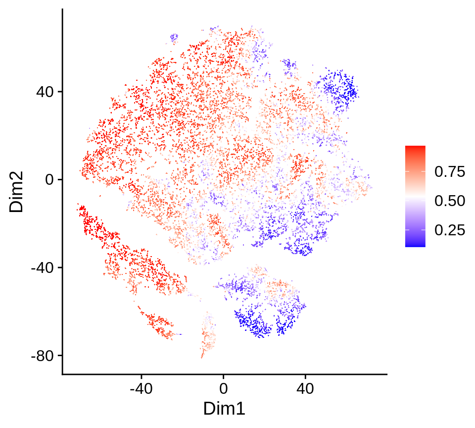
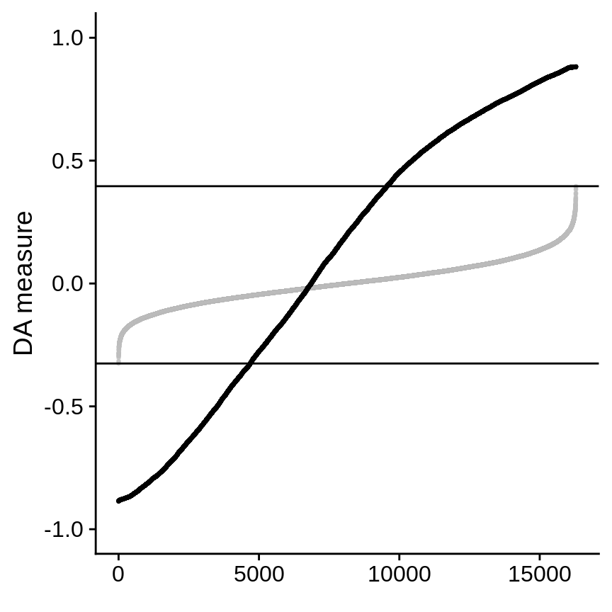
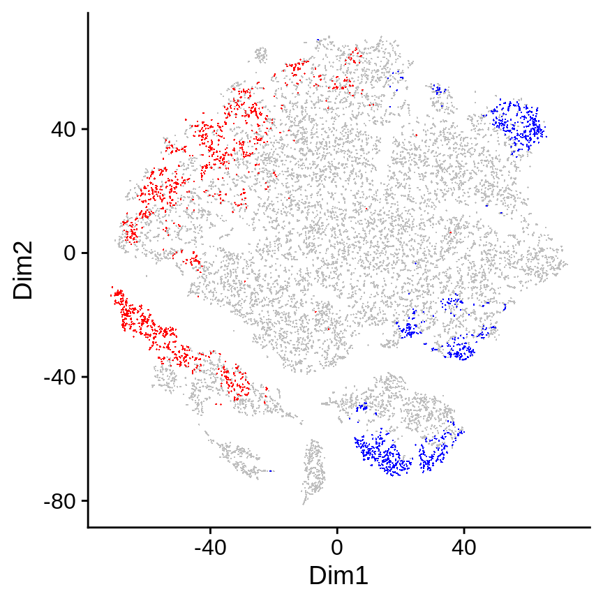
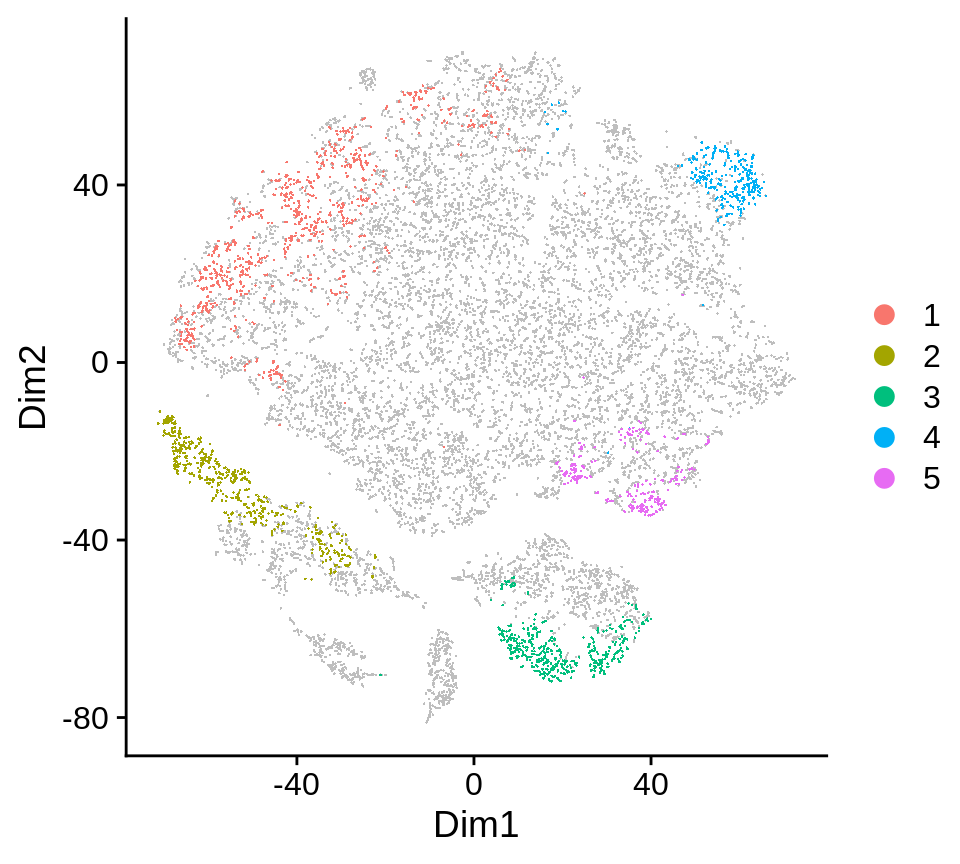
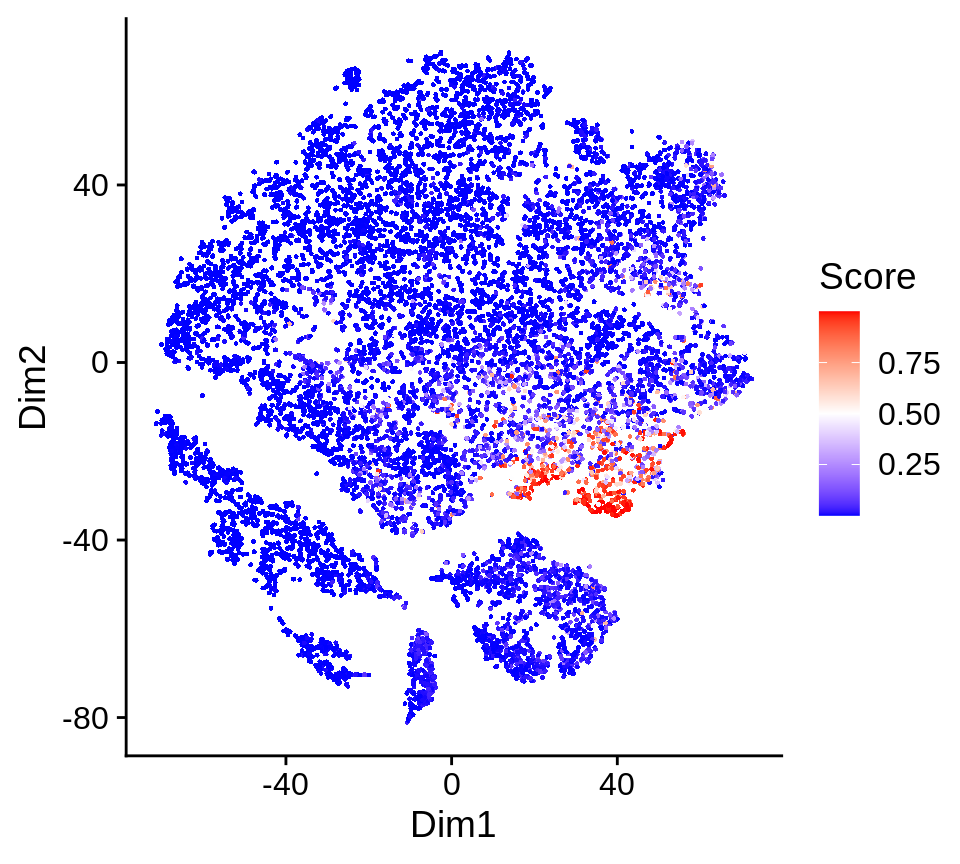

tutorial.RmdThis tutorial shows basic steps to run DAseq on scRNA-seq datasets.
Data used in this tutorial is from Sade-Feldman, Moshe, et al. (Cell. 2018). The goal is to compare immune cells from melanoma patients that respond or not respond to immune checkpoint therapy: responders (R) and non-responders (NR), and identify cell subpopulations with differential abundance (DA) between them.
With DAseq, five DA cell subpopulations are detected and characterized.
library(DAseq)
Set Python to use, put the PATH to your Python binary here
python2use <- "/path/to/your/python"
Set GPU to use, put the GPU number here
GPU <- 5
Here, we will get the sample label names for two biological conditions: responders (R) and non-responders (NR) in the data, respectively. In total, there are 48 samples, 17 of which are responders (R) and 31 of which are non-responders (NR). This information is in the dataframe X.label.info attached to the DAseq package: the label column shows the sample label name, and the condition column shows the condition (R or NR).
head(X.label.info)
## label condition
## 1 Pre_P1 R
## 2 Post_P1 R
## 3 Post_P4 R
## 4 Post_P5_2 R
## 5 Pre_P7 R
## 6 Post_P7 RNow we get the sample label names for R and NR.
labels_res <- X.label.info[X.label.info$condition == "R", "label"] labels_nonres <- X.label.info[X.label.info$condition == "NR", "label"]
This step incorporates the first two steps of DAseq algorithm. The input of this step includes:
X, the scRNA-seq data after dimension reduction (PCA), this is included in the DAseq package as X.melanoma
cell.labels, sample label for every cell in the data, this is included in the DAseq package as X.label.melanoma
labels.1, sample label names that correspond to one biological condition (R), R_labels
labels.2, sample label names that correspond to the other biological condition (NR), NR_labels
k.vector, values of k to use for the calculation of score vector with kNN, here we will use k from 50 to 500plot.embedding, 2D embedding of the data to visualize the results (t-SNE), this is included in the DAseq package as X.2d.melanoma
Runtime for this step with n.runs = 1 is less than a minute on a standard laptop, and it will scale linearly with n.runs.
da_cells <- getDAcells( X = X.melanoma, cell.labels = X.label.melanoma, labels.1 = labels_res, labels.2 = labels_nonres, k.vector = seq(50, 500, 50), plot.embedding = X.2d.melanoma )
The output of this step is a list of results:
da.ratio, score vector for each cellda.pred, DA measure for each cellda.up, index of DA cells more abundant in labels.2 (non-responders)da.down, index of DA cells more abundant in labels.1 (responders)str(da_cells[1:2])
## List of 2
## $ da.ratio: num [1:16291, 1:10] -0.51756 0.29553 0.00342 -0.20471 -0.38711 ...
## ..- attr(*, "dimnames")=List of 2
## .. ..$ : NULL
## .. ..$ : chr [1:10] "50" "100" "150" "200" ...
## $ da.pred : num [1:16291] -0.5088 0.3308 0.0449 -0.0564 -0.5612 ...The prediction values are overlayed on the 2D embedding in the pred.plot slot of the output.
da_cells$pred.plot

DAseq runs a random permutation on the labels to generate the null distribution for DA measure. We can check the permutation results in the rand.plot slot.
da_cells$rand.plot

By default, cells with DA measure values larger than the maximum or small than the minumum than permutated DA measure are selected as DA cells. The threshold can be changed by running updateDAcells() to look at the most salient DA cells. In this data, we use 0.8 (for non-responder) and -0.8 (for responder).
da_cells <- updateDAcells( X = da_cells, pred.thres = c(-0.8,0.8), plot.embedding = X.2d.melanoma )
Selected DA cells are highlighted in the 2D embedding in the da.cells.plot slot. Cells in red are in the top (these cells are more abundant in non-responder samples), blue in the bottom (these cells are more abundant in responder samples).
da_cells$da.cells.plot

In this step, selected DA cells will be clustered into several coherent regions, which represent the DA cell subpopulations. Several input parameters are identical to that of getDAcells(): X, cell.labels, labels.1, labels.2, plot.embedding.
Other input includes:
da.cells: the output of getDAcells()
resolution: clustering parameter, default 0.05, use a larger value to group DA cells into more regionsmin.cell: minimum number of cells, regions with fewer cells will be removed, default is to use the minumum k value in the k.vector
da_regions <- getDAregion( X = X.melanoma, da.cells = da_cells, cell.labels = X.label.melanoma, labels.1 = labels_res, labels.2 = labels_nonres, resolution = 0.01, plot.embedding = X.2d.melanoma, )
The output is a list of results:
da.region.label, DA subpopulation labels for all the cells, 0 means non-DA cellsDA.stat, statistics of each DA subpopulationstr(da_regions[1:2])
## List of 2
## $ da.region.label: num [1:16291] 0 0 0 0 0 0 0 0 0 0 ...
## $ DA.stat : num [1:5, 1:3] 0.973 0.965 -0.933 -0.976 -0.904 ...
## ..- attr(*, "dimnames")=List of 2
## .. ..$ : NULL
## .. ..$ : chr [1:3] "DA.score" "pval.wilcoxon" "pval.ttest"Clustering result is shown in the plot: da.region.plot slot.
da_regions$da.region.plot

The final step of DAseq is to characterize each DA subpopulation by detecting genes that seprate the DA subpopulation from the rest of the cells through STG (stochastic gates).
The gene expression data is NOT included in the DAseq package and needs to be downloaded. This code will download the data to the current working directory, and load this data into R.
download.file( "ftp://ftp.ncbi.nlm.nih.gov/geo/series/GSE120nnn/GSE120575/suppl/GSE120575_Sade_Feldman_melanoma_single_cells_TPM_GEO.txt.gz", "./GSE120575_Sade_Feldman_melanoma_single_cells_TPM_GEO.txt.gz" ) X.data.melanoma <- read.table( "./GSE120575_Sade_Feldman_melanoma_single_cells_TPM_GEO.txt.gz", sep = "\t", header = F, row.names = 1, stringsAsFactors = F, skip = 2 ) X.data.melanoma <- as.matrix(X.data.melanoma[,-16292])
Then, we will use STG to identify markers for each DA subpopulation. The input parameters for STG are the normalized gene expression matrix, and the output from the function getDAregion().
STG_markers <- STGmarkerFinder( X = X.data.melanoma, da.regions = da_regions, lambda = 1.5, n.runs = 5, return.model = T, python.use = python2use, GPU = GPU )
The output is a list of results:
da.markers, a list of data frames, each data frame contains markers for each DA subpopulationaccuracy, accuracy of STG for each DA subpopulationmodel, the actual model from STG for each DA subpopulation, please refer to the documentation of STGmarkerFinder()
Top markers for DA region 5 are shown:
head(STG_markers$da.markers[["5"]])
## gene avg_logFC p_value
## TCF7 TCF7 1.8865021 4.261047e-122
## RPL13 RPL13 0.1765772 2.421585e-113
## RPL3 RPL3 0.2037486 1.516596e-102
## LEF1 LEF1 2.3623672 6.638429e-102
## RPS6 RPS6 0.2002730 2.013261e-100
## RPS3A RPS3A 0.2040410 2.452806e-98In the model slot, predictions from STG are available. These predictions are linear combinations of a limited set of genes that best separate the DA subpopulation from the rest of the cells.
For example, here we will plot the prediction value from STG for DA subpopulation 5: the pred slot of the 5th list in the model slot of the output.
plotCellScore( X = X.2d.melanoma, score = STG_markers$model[["5"]]$pred )
